15Out 2026
Cidades desenhadas para pedalar
Com Marta Oliveira · Diretora de Mobilidade, C. M. Matosinhos


Talks temáticas sobre bicicleta e mobilidade, online e presenciais, a caminho da 1ª Bikes Summit. Gratuitas e abertas a todos — o ano inteiro.
Próxima talk 15 Out 2026 · Cidades desenhadas para pedalar →Entre cada edição da Bikes Summit, as Talks mantêm a conversa viva — sessões curtas e temáticas com quem faz acontecer a mobilidade ciclável.
As Bikes Summit Talks são um ciclo de encontros temáticos — online e presenciais — dedicados aos grandes temas da bicicleta: mobilidade urbana, inovação, indústria, políticas públicas e desporto.
Cada talk reúne um orador de referência e a comunidade, num formato ágil de apresentação e debate. São o ponto de encontro que prepara terreno para a grande Cimeira — e que mantém a rede ativa durante todo o ano.
Gratuitas e abertas a todos: decisores, indústria, academia, startups e entusiastas.

Assista onde estiver, em direto, ou junte-se à comunidade em Matosinhos e no Porto.
Cada sessão foca um eixo da Cimeira, com um orador de referência e tempo para debate.
Mantêm a comunidade ligada ao longo do ano, a caminho da próxima Bikes Summit.
Calendário a caminho da 1ª edição da Cimeira, em Abril de 2027. Programa preliminar — novas talks anunciadas ao longo do ano.
Com Marta Oliveira · Diretora de Mobilidade, C. M. Matosinhos
Com João Mendonça · CEO, VeloMobility Labs
Com Ricardo Nogueira · Investigador, U.Porto Mobilidade
Com Sofia Antunes · Fundadora, PedalX Mobility
Com Isabel Furtado · Federação de Mobilidade Ciclável
Painel com a comunidade Bikes Summit
Quer ser avisado de cada nova talk? Junte-se à comunidade.